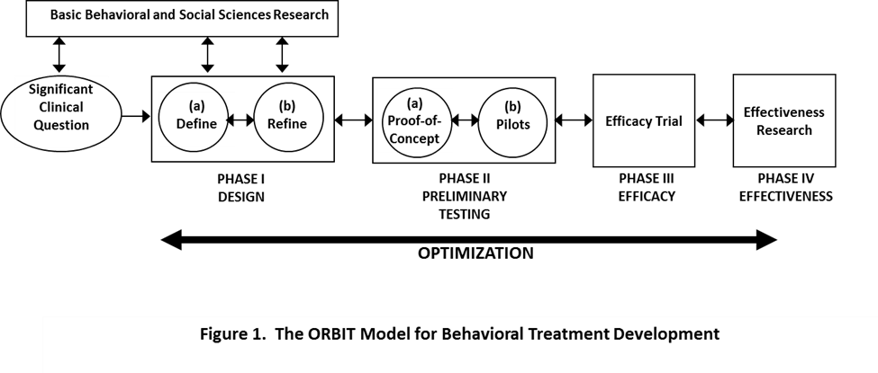

Translational Research
Background
Behavioral risk factors, such as obesity, sedentary lifestyles, unhealthy dietary intake, alcohol use, and lack of UV protection, are major contributors to cancer risk, occurrence, and outcomes. Although evidence-based interventions for these risk factors exist, even the most successful are limited in their ability to induce significant long-term behavior change in the majority of adults, and change is often limited to a single health behavior rather than multiple behaviors.
The development of more powerful health-related behavioral interventions is dependent on improving our understanding of human behavior, and then translating that knowledge into new and more effective interventions with enduring effects. This process is often referred to as “translational research.” The translational process can be characterized as either Translation I (T1), in which basic science discoveries are used to develop new interventions for disease (“bench to bedside”), or Translation II (T2), which is aimed at improving utilization of proven interventions in clinical practice and community settings (“bedside to public health”).
Recent advances in basic behavioral and social science research (e.g., cognitive and affective neuroscience, communication science, decision-making) and the development of more sophisticated tools for understanding the psychosocial determinants and physiologic bases of human behavior (e.g., brain imaging, mobile technologies, geospatial methods) have yielded significant insights about human cognition, affect, motivation, and behavior. These discoveries point to promising new directions for applying the translational process and developing behavior change interventions that could reduce cancer risk, improve treatment outcomes, and enhance the lifespan and quality of life of cancer survivors.
The ORBIT Model
The Obesity-Related Behavioral Intervention Trials (ORBIT) model, a framework originally developed to inform the design and optimization of behavioral interventions for obesity and obesity-related behaviors, is useful for translating basic behavioral and social science findings into treatments for cancer-related behavioral risk factors (Czajkowski et al, 2015).
The ORBIT model consists of a series of phases that mirror those in the drug development process: First basic behavioral and social science findings, then early-phase studies, then proof-of-concept, pilot feasibility, and preliminary efficacy studies, then larger Phase III and IV efficacy and effectiveness trials.
 Czajkowski, Powell et al., Health Psych, 2015
Funding for Translational Research
Several key HBRB-related funding announcements encourage investigators to use models such as ORBIT in their behavioral intervention development applications to encourage a long-term, systematic approach to developing and testing treatments for cancer risk factor behaviors.
Cancer Prevention and Control Clinical Trials Grant Program
Expiration Date
January 8, 2021
NCI invites applications for support of investigator-initiated clinical trials that have the potential to reduce the burden of cancer through improvements in early detection, prevention, healthcare delivery, quality of life, and/or survivorship related to cancer; with such attributes, the proposed studies should also have the potential to improve clinical practice and/or public health.
View Full Program Announcement
PAR-18-559 (R01 Clinical Trial Required)
View Active BRP Grants
Ideas to Interventions (I2I)
On September 28-29, 2016, NCI conducted the workshop “Accelerating the Pathway from Ideas to Efficacy: Developing More Effective Interventions for Lifestyle Behaviors related to Chronic Diseases,” which highlighted the importance of promoting early-phase behavioral translation research – i.e., research that translates basic behavioral science findings into new, potentially more effective health behavior interventions.
Workshop participants conveyed a pressing need to identify avenues for building early-phase translational research capacity, establish a viable and sustainable “pipeline” for basic-to-clinical behavioral research, and promote institutional and structural changes to support early-phase behavioral intervention research.
One outgrowth of the workshop is the development of Ideas to Interventions (I2I), a platform intended to engage, build, and nurture a network of researchers who are interested in early-phase behavioral translation research.
Contact

Susan Czajkowski
Branch Chief
czajkows@mail.nih.gov